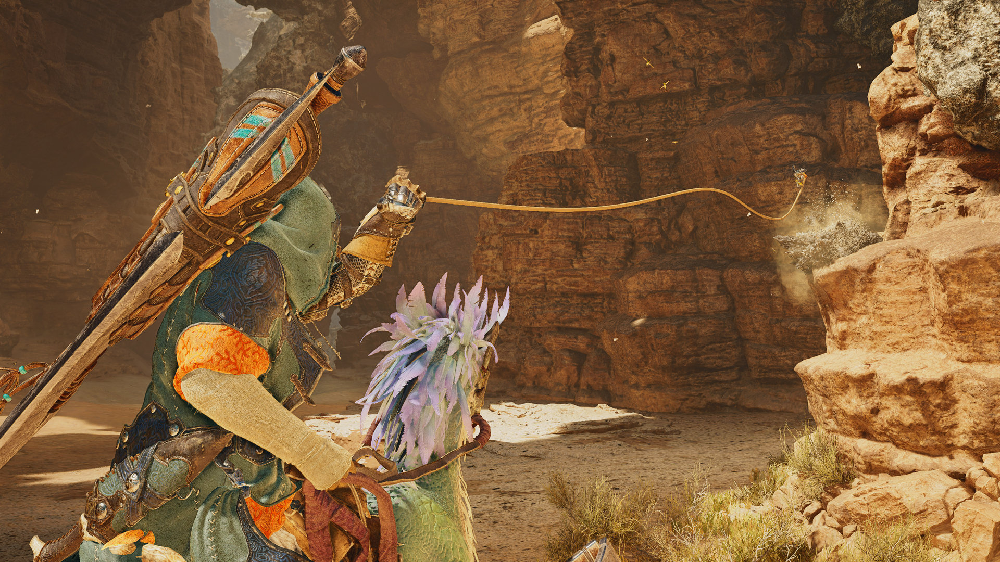

Hunter’s Arsenal
In Monster Hunter Wilds, the hunter’s toolkit is vast and diverse. Whether you prefer brute force or calculated precision, you’ll find a weapon that fits your playstyle. The game introduces multi-tiered weapons that can evolve during the hunt, adapting to the player’s preferences and the nature of the monster. Greatsword: A heavy-hitting weapon perfect for crowd control and delivering powerful strikes. Bowguns: For players who prefer ranged combat, featuring both explosive and elemental ammunition. Switch Axes and Insect Glaives: Multi-form weapons that allow for versatile attacks and can switch between melee and ranged modes in real-time. Each weapon can be customized with elemental effects, monster parts, and new crafting materials collected from defeated creatures.
The Hunt: Strategies and Tactics
Monster Hunter Wilds emphasizes strategic gameplay, where players must study their prey before engaging. Each monster has its own unique behavior patterns, weaknesses, and strengths. Players can set traps, use environmental hazards to their advantage, and even enlist the help of NPC allies to turn the tide of battle. The game also introduces a new tracking system that allows players to follow monsters through the wilderness, using clues left behind in the environment.

Multiplayer Experience
- Seamless Co-op: Join friends in real-time without loading screens, allowing for a more immersive experience.
- Guild Quests: Participate in special quests that require teamwork and strategy to complete.
- Dynamic Events: Engage in world events that can change the environment and monster behavior, requiring players to adapt their strategies.
- Shared Resources: Work together to gather resources and craft items, enhancing the cooperative experience.
Evolving Monster Ecosystem
The monsters in Monster Hunter Wilds are more than just obstacles; they are part of a living ecosystem. As players interact with the world, they’ll witness changes in monster behavior, ecosystem shifts, and new challenges arising. Some monsters may grow more aggressive after a certain hunt, while others might form alliances or migrate to new areas, affecting the balance of the wilderness.